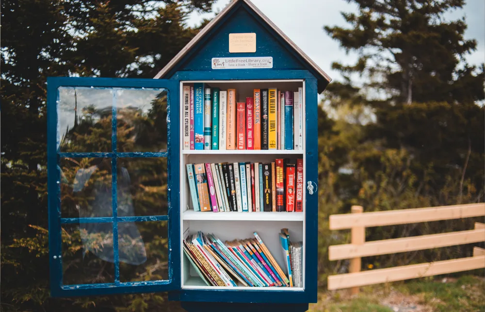

Le guide complet
Un livre neuf coûte en moyenne entre 8 et 22 euros. Pour un lecteur régulier, la facture grimpe vite. Emprunter permet de lire autant qu'on le souhaite sans que le budget devienne un frein, et de découvrir des genres ou des auteurs qu'on n'aurait pas achetés à l'aveugle.
Presque toutes les communes disposent d'une médiathèque municipale. L'inscription est gratuite ou à très faible coût, et donne accès à un fonds de livres, souvent de bandes dessinées, de CD et de DVD. Il suffit généralement d'une pièce d'identité et d'un justificatif de domicile pour créer sa carte.
La limite classique : il faut se déplacer pour savoir ce qui est disponible, et les horaires d'ouverture ne correspondent pas toujours à ceux d'un habitant qui travaille en journée.

Dans de nombreuses villes, des boîtes à livres en libre accès permettent de prendre un livre et d'en déposer un autre. C'est un système fondé sur la confiance, sans inscription, mais le choix disponible dépend entièrement du hasard des dépôts.
Les applications de médiathèque numérique, comme BliGO, combinent le meilleur des deux mondes : le catalogue réel de votre médiathèque, consultable depuis un téléphone, avec la possibilité de réserver un livre en Click & Collect avant de se déplacer.
Pour les habitants des DROM-COM, où la distance jusqu'à une médiathèque bien fournie peut être un frein, ce type d'outil facilite l'accès à la lecture sans dépendre uniquement de la médiathèque la plus proche.
Emprunter, c'est aussi parfois donner. Les dons participatifs permettent aux habitants de proposer les livres dont ils n'ont plus l'usage à leur médiathèque, qui les valide avant de les ajouter au catalogue commun. Un moyen simple de faire circuler les livres plutôt que de les laisser prendre la poussière.
Téléchargez BliGO pour découvrir le catalogue de votre médiathèque dès aujourd'hui.